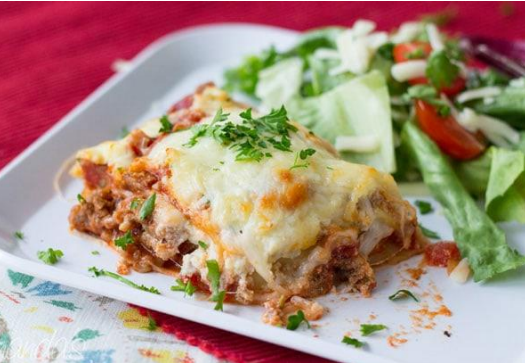

Italian Lasagna:

Ingredients:
Flour – 640g
Water (room temperature) – 360g
Salt (fine) – 14g
Yeast (dried or fresh) – around 0.2g to 0.5g instant yeast – multiply by 3 for fresh yeast.
Tinned tomatoes – 300g tin
Tomato puree (optional) – a tablespoon
Salt – sprinkling of table salt or sea salt
Pepper – freshly ground black pepper
Mozzarella – 2 x 125g bags of fresh Mozzarella balls
Parmesan – about 30g
Olive Oil – a few glugs of extra virgin olive oil
Fresh Basil – hand full of fresh leaves